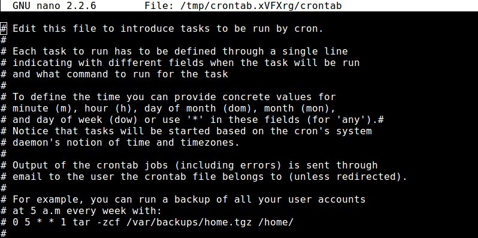

Rsync Примеры синхронизации
Потребность передачи файлов между серверами и компьютерами возникает довольно часто, особенно при администрировании нескольких устройств. Обычно для этих целей удобно использовать ssh и scp, но если файл очень большой, а изменена была только небольшая его часть, или вы хотите настроить постоянную автоматическую синхронизацию, то scp уже явно неидеальный вариант. Для этого существуют специальные утилиты. В этой статье мы рассмотрим одну из них. А именно будет рассмотрена rsync синхронизация в linux.
Rsync - это программное обеспечение с открытым исходным кодом, которое можно использовать для синхронизации файлов и папок с локального компьютера на удаленный и наоборот. Примечательная особенность Rsync - возможность передавать зашифрованные файлы с помощью SSH и SSL. Кроме того, здесь передача файлов выполняется в один поток, в отличие от других подобных программ, создающий отдельный поток для передачи каждого файла. Это увеличивает скорость и убирает дополнительные задержки, которые становятся проблемой при передаче большого количества маленьких файлов.
Возможно использование rsync для синхронизации файлов, каталогов, при этом может применяться сжатие и шифрование. Программа впервые была применена в июне 1996 года, она разработана Эндрю Тридгелом и Полом Маккеррасом. Rsync синхронизация выполняется по протоколу RSYNC, который специально разработан не просто для передачи файлов между двумя компьютерами, а для их синхронизации. Если точнее, то передается не файл полностью, а только то, что было изменено.
Как вы уже поняли, в этой статье мы рассмотрим rsync примеры синхронизации, настройку rsync, а также ее основные возможности и опции.
Давайте сначала рассмотрим примечательные особенности Rsync:
Мы не будем подробно останавливаться на установке этой утилиты в системе. Она очень популярна, поэтому вы можете установить ее с помощью своего пакетного менеджера из официальных репозиториев. В Ubuntu команда установки будет выглядеть вот так:
sudo apt-get install rsync
А теперь, уже по традиции подобных статей, рассмотрим синтаксис команды rsync:
$ rsync опции источник приемник
В качестве источника и приемника может выступать удаленная или локальная директория. Например, ssh, rsync, samba сервер или локальная директория. Опции задают дополнительные параметры rsync.
Теперь давайте кратко рассмотрим параметры rsync. Здесь перечислены не все опции. Для более подробной информации смотрите man rsync:
Как вы понимаете, нельзя просто так взять и закинуть на первую попавшуюся машину файлы без установки на нее специального программного обеспечения. На удаленной машине должен быть установлен и настроен RSYNC, SSH, Samba или FTP сервер, с помощью которого Rsync сможет авторизоваться на машине и передавать туда файлы.
Рассмотрим минимальную настройку сервера rsync, для того чтобы могло быть выполнено rsync копирование файлов. Он позволит нам не только синхронизировать файлы на машину, но и получать и от туда.
Сначала создайте конфигурационный файл со следующим содержимым:
sudo vi /etc/rsyncd.conf
[share]
path = /tmp/share/
hosts allow = 192.168.1.*
hosts deny = *
list = true
uid = root
gid = root
read only = false
Здесь мы задаем путь к нашей папке для синхронизации, разрешаем доступ к серверу только с домашней сети (192.168.1.*) и запрещаем все остальные подключения. Параметры uid и gid указывают пользователя и группу, от которых будет запущен демон. Лучше не использовать root, а указать пользователя nobody и выдать ему права на ту папку, в которую будет выполняться rsync синхронизация каталогов.
Настройка rsync завершена, остается сохранить файл, запустить сервер rsync и добавить его в автозагрузку:
sudo service rsyncd start
sudo service rsyncd enable
Дальше давайте рассмотрим использование rsync, примеры синхронизации.
Копирование и синхронизация файлов на локальном компьютере
Rsync позволяет синхронизировать файлы и папки в пределах одной машины. Давайте сначала рассмотрим использование rsync для синхронизации файла на локальном компьютере:
rsync -zvh file /tmp/backups/
Синхронизация папок на локальной машине
Синхронизация папок rsync выполняется так же просто, как и файлов:
rsync -avzh /home/user/documents /tmp/backups/
Синхронизация с удаленным сервером
Ненамного сложнее синхронизировать файлы с удаленным сервером. Скопируем локальную папку documents, на удаленный сервер:
rsync -avz documents/ root@192.168.0.101:/home/
Точно также можно синхронизировать файлы с rsync из удаленного сервера:
rsync -avz root@192.168.0.101:/home/ documents/
Адрес удаленного сервера записывается в таком формате:
имя_пользователя@адрес_машины:порт/папка/на/удаленной_машине
Порт указывать не обязательно, тогда rsync синхронизация папок будет выполняться на стандартном порту.
Чтобы задать протокол подключения используется опция -e. При использовании SSH все передаваемые данные шифруются и передаются по защищенному каналу, таким образом, чтобы никто не мог их перехватить.
Для использования SSH вам нужно знать пароль пользователя в системе.
Синхронизация файлов rsync с удаленного сервера по ssh будет выглядеть вот так:
rsync -avzhe ssh root@192.168.0.101:/root/install.log /tmp/
А теперь передадим данные на тот же сервер:
rsync -avzhe ssh backup.tar root@192.168.0.101:/backups/
Просмотр прогресса при синхронизации
Для просмотра прогресса копирования файла с одной машины на другую используется опция progress:
rsync -avzhe ssh --progress /home/user/documents root@192.168.0.101:/root/documents
Синхронизация не всех файлов в rsync
Опции include и exclude позволяют указать какие файлы нужно синхронизировать, а какие исключить. Опции работают не только с файлами но и с директориями.
Например, скопируем все файлы, начинающиеся на букву R:
rsync -avze ssh --include 'R*' --exclude '*' root@192.168.0.101:/root/documents/ /root/documents
Во время синхронизации можно удалять файлы, которых нет на машине откуда идет rsync синхронизация, для этого используется опция --delete.
Например:
rsync -avz --delete root@192.168.0.101:/documents/ /tmp/documents/
Если перед выполнением этой команды создать в папке файл которого нет на удаленном сервере, то он будет удален.
Вы можете указать максимальный размер файлов, которые нужно синхронизировать. Для этого используется опция --max-size. Например, будем синхронизировать только файлы меньше 200 килобайт:
rsync -avzhe ssh --max-size='200k' /user/documents/ root@192.168.0.100:/root/documents
Есть возможность удалять исходные файлы после завершения синхронизации с удаленным сервером:
rsync --remove-source-files -zvh backup.tar /tmp/backups/
Таким образом, файл backup.tar будет удален после завершения копирования в папку /tmp/backups.
Если вы новичок, и еще не использовали rsync, то возможно захотите посмотреть как отработает команда без применения реальных действий в файловой системе. Для этого есть опция dry-run. Команда только выведет все выполняемые действия в терминал, без выполнения реальных изменений:
rsync --dry-run --remove-source-files -zvh backup.tar /tmp/backups/
Вы можете ограничить использование пропускной способности сети с помощью опции --bwlimit:
rsync --bwlimit=100 -avzhe ssh /user/home/documents/ root@192.168.0.101:/root/documents/
Как я уже писал выше, rsync синхронизирует только части файла, если вы хотите синхронизировать файл целиком используйте опцию -W:
rsync -zvhW backup.tar /tmp/backups/backup.tar
backup.tar
Автоматическая синхронизация папок rsync
Можно расписать автоматическую синхронизацию с помощью cron. Но в случае доступа к серверу по SSH необходимо будет создать ключ и загрузить его на сервер, чтобы аутентификация проходила без запроса пароля.
Создаем ключ:
ssh-keygen -t rsa
Загружаем ключ на сервер к с которым собираемся синхронизироваться:
ssh-copy-id -i /home/sk/.ssh/id_rsa.pub sk@192.168.1.250
Теперь можем переходить к настройке расписания cron. Будем запускать синхронизацию каждый день:
crontab -e
00 05 * * * rsync -azvr /home/user/Downloads/ 192.168.1.101::share
rsync синхронизация каталогов будет выполняться каждый день в пять утра. Подробнее о настройке расписаний Cron можно почитать в отдельной статье.
Главная
Как добавить команду в Cron
Как добавить команду в Cron
Терминал Август 3, 2015 8 admin
Сервис Cron - это стандартный планировщик задач в Linux. С помощью него вы можете запланировать выполнение команды или скрипта один или несколько раз, в определенную минуту, час, день, неделю и месяц. Cron очень полезный инструмент для планирования задач технического обслуживания, таких как резервное копирование, ротация логов, проверка файловой системы, мониторинг дискового пространства и т д.
Добавление команды в Cron из командной строки
Чтобы добавить задание Cron из терминала можно использовать утилиту crontab.
Чтобы создать новое задание введите следующую команду:
crontab -e
Все запланированные действия будут выполнятся от текущего пользователя, если вы хотите указать другого пользователя используйте опцию -u:
sudo crontab -u имя_пользователя -e
Команда откроет текстовый редактор, где вы сможете добавлять или редактировать задания Cron. Будет использован установленный по умолчанию редактор, например nano.

Каждая задача формируется следующим образом:
минута час день месяц день_недели команда
Первые пять параметров характеризуют время выполнения, а последний, это полный путь к команде или скрипту, который нужно выполнить.
Вот самые распространенные примеры задач:
Когда завершите настройку, нажмите Ctrl+O для сохранения и Ctrl+X для закрытия редактора. Теперь новые задания Cron будут добавлены
и активированы.
Чтобы увидеть список активных заданий наберите:
crontab -l
======
Для отладки задания cron, можно перенаправить результат в файл
Пример:
0-59 * * * * /home/user/mail 2>/tmp/tmp.cron
Если при запуске команды /home/user/mail возникнут ошибки, то они будут записаны в файл /tmp/tmp.cron и вы всегда сможете узнать причину. В случае перенаправления вывода в файл, письмо, юзеру указаному в переменной MAILTO отправлено не будет.
Посмотреть информацию о всех командах запускаемых демоном cron можно в каталоге /var/log называются cron, cron1 и т.д.
В файле /var/log/cron записано время запуска всех заданий cron за предыдущий день
Mar 29 04:03:00 rst CROND[4434]: (user) CMD (/home/user/mail)
Mar 29 04:03:59 rst CROND[4493]: (user) CMD (/home/user/mail)
Mar 29 04:05:00 rst CROND[4507]: (user) CMD (/home/user/mail)
Mar 29 04:06:00 rst CROND[4549]: (user) CMD (/home/user/mail)
В остальных файлах cron1,cron2 находится подобная информация, но более старая чем в cron
Вот практически и все, что требуется знать для использования cron и crontab.
Терминал Август 3, 2015 8 admin
Теперь вы знаете все что нужно, чтобы настройка rsync была выполнена правильно. Мы рассмотрели некоторые примеры rsync синхронизации. И теперь вы можете использовать все это для решения своих задач. Я упустил какую-то полезную информацию или у вас остались вопросы? Напишите в комментариях!
============
sudo rsync -Wvt --recursive --delete /home/alensav/.config/mytetra/data /home/alensav/Dropbox
sudo rsync -vagt --recursive --ignore-existing /home/Xeoma/XeomaArchive/Preview+Archive.6 /media/capsule/camera_orang